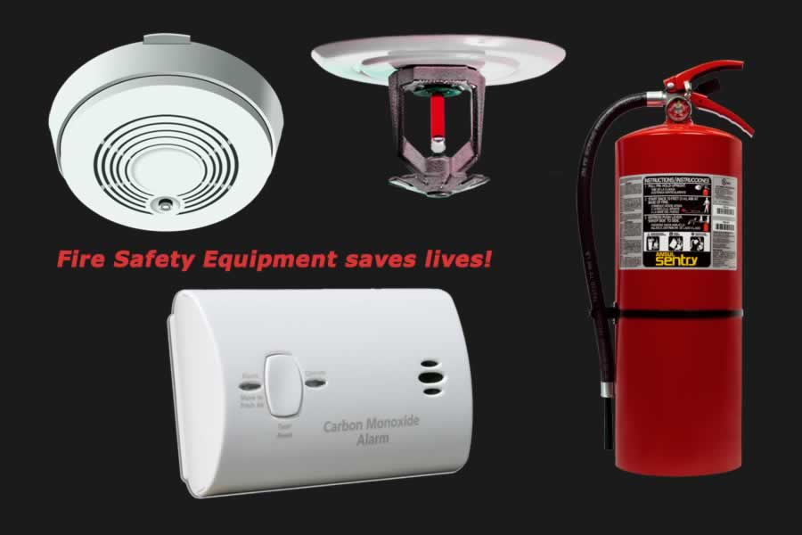

Fire is one of the leading cases that cause problems for anyone that can happen anywhere at anytime.
That's why it's vital that one must be ready for such an event to happen.
This site is for how you can prevent these things from happening in the first place, there are many solutions, people, organizations, and things that you can learn on to prevent fires happening in your own home and endangering your loved ones.
HOW TO PREVENT FIRES
Turning Off Gas/Stoves
Turning off the gas or your stove is one of the most important and vital things that you need to learn to do in order to prevent fires being caused by gas leaks in your homes.
Turning Off Unnecessary Electrical Usage
Turning off lights, electrical switches, or any type of gadget that requires electricity can help in preventing a fire as well due to elecctrical shorts that cause sparks and can spread flames in other house furniture.

Fire Safety Equipment
Buying household meant items for fire prevention is one of the essentials that you would need to keep your families, neighbors, friends, and homes safe from being burnt down by fires.
Don't Play With Fire
It is a given that one must not at all times play with any flammable object, that's why we must make sure to keep any flammable object away from fire and not to play with fire, also to not let children near such items.
Avoid Smoking
Smoking and cigarrete buds are a high factor on many fires caused by lit cigarretes not properly thrown away or put out.
It can also help you stay as healthy as you can.